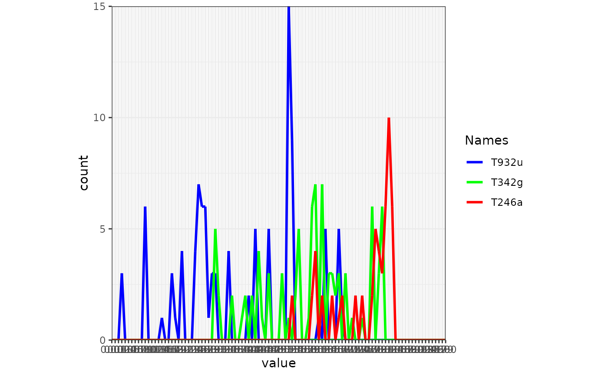
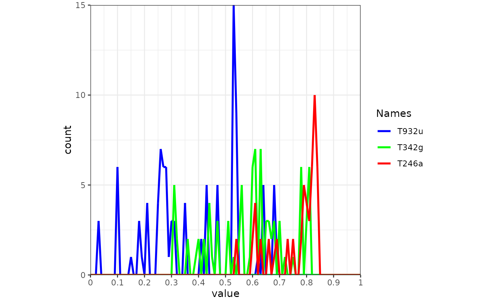

Add ggplot2 function to frames
add_gg.RdThis function applies ggplot2 functions (e.g. to add layers, change scales etc.) to frames created with frames_spatial or frames_graph.
Arguments
- frames
an object of class
moveViscreated withframes_spatial.- gg
ggplot2expressions (see details), either asan expression of one or a list of
ggplot2functions to be added to every frame,a list of such of the same length as
framesto add differentggplot2expressions per frame
- data
optional data used by
gg(see details), eitheran object of any class, e.g. a
data.frame, used byggthat will be added to all frames,a list, e.g. of multiple
data.frames, with length offramesto add different data to each frame.
- ...
additional (non-iterated) objects that should be visible to
gg.- verbose
logical, if
TRUE, messages and progress information are displayed on the console (default).
Details
Argument gg expects ggplot2 functions handed over as expressions (see expr) to avoid their evaluation
before they are called for the correct frame. Simply wrap your ggplot2 function into expr and supply it to
gg. To add multiple ggplot2 functions to be applied on every frame, supply an expression containing a list of
ggplot2 functions (e.g. expr(list(geom_label(...), geom_text(...)))). This expression would be added to all frames.
To add specific ggplot2 functions per frame, supply a list of expressions of the same length as frames. Each expression may
contain a list of ggplot2 functions, if you want to add multiple functions per frame.
If data is used, the ggplot2 expressions supplied with gg can use the object by the name data for plotting.
If data is a list, it must be of the same length as frames. The list will be iterated, so that functions in gg
will have access to the individual objects within the list by the name data per each frame. If the data you want to display
is does not change with frames and may only be a character vector or similiar, you may not need data, as you can supply
the needed values within the expression supplied through gg.
If you supply gg as a list of expressions for each frame and data as a list of objects (e.g. data.frames) for each frame,
each frame will be manipulated with the corresponding ggplot2 function and the corresponding data.
Examples
library(moveVis)
library(move2)
library(terra)
library(sf)
#> Linking to GEOS 3.12.1, GDAL 3.8.4, PROJ 9.4.0; sf_use_s2() is TRUE
library(ggplot2)
data("move_data", package = "moveVis")
r <- readRDS(example_data(file = "raster_NDVI.rds"))
# align movement
m <- align_move(move_data, res = units::set_units(4, "min"))
#> Temporal resolution of 4 [min] is used to align trajectories.
# let's create a data.frame containing corner coordinates
data <- cbind(
x = c(8.96, 8.955, 8.959, 8.963, 8.968, 8.963, 8.96),
y = c(47.725, 47.728, 47.729, 47.728, 47.725, 47.723, 47.725)
)
# make an sf object projected to Pseudo Mercator to match basemap crs
data <- list(data) %>%
st_polygon() %>%
st_geometry() %>%
st_as_sf(crs = st_crs(4326)) %>%
st_transform(crs = st_crs(3857))
# add the polygon to all frames
if (FALSE) { # \dontrun{
# create frames with add_gg additions
frames <- frames_spatial(
m, map_service = "osm", map_type = "topographic", alpha = 0.5) %>%
# add polygon
add_gg(gg = expr(geom_sf(
data = data, colour = "black", fill = "transparent",
linetype = "dashed", lwd = 1)
), data = data) %>%
# add coordinate system
add_gg(gg = expr(
coord_sf(datum = st_crs(3857), expand = F)
), data = data)
# take alook
frames[[100]]
# add_gg can also be used iteratively to manipulate each frame differently.
# let's create unique polygons per frame:
# create data.frame containing corner coordinates
data <- cbind(
x = c(8.96, 8.955, 8.959, 8.963, 8.968, 8.963, 8.96),
y = c(47.725, 47.728, 47.729, 47.728, 47.725, 47.723, 47.725)
)
# make a list from it by replicating it by the length of frames
data <- rep(list(data), length.out = length(frames))
# let's alter the corner coordinates so that each polygon is different
data <- lapply(data, function(x){
y <- rnorm(nrow(x)-1, mean = 0.00001, sd = 0.0001)
x + c(y, y[1])
})
#' # make sf object from the data list contents and project to pseudo mercator
data <- lapply(data, function(x){
list(x) %>%
st_polygon() %>%
st_geometry() %>%
st_as_sf(crs = st_crs(4326)) %>%
st_transform( crs = st_crs(3857))
})
# apply add_gg
frames <- frames_spatial(
m, map_service = "osm", map_type = "topographic", alpha = 0.5) %>%
# add polygons
add_gg(gg = expr(geom_sf(
data = data,
colour = "black",
fill = "transparent",
linetype = "dashed",
lwd = 1)
), data = data) %>%
# add coordinate system
add_gg(gg = expr(coord_sf(
datum = st_crs(3857), expand = F)
), data = data)
frames[[100]]
# animate frames to see how the polygons "flip"
animate_frames(frames, out_file = tempfile(fileext = ".mov"))
} # }
# you can use add_gg on any list of ggplot2 objects,
# also on frames made using frames_graph
frames <- frames_graph(
m, r, r_type = "gradient",
fade_raster = TRUE, graph_type = "hist", val_by = 0.01
)
#> Processing input data...
#> Approximated animation duration: ≈ 7.52s at 25 fps using 188 frames
#> Extracting raster values per frame...
frames[[100]]

# manipulate the labels, since they are very dense:
# just replace the current scale
frames <- add_gg(frames, expr(scale_x_continuous(
breaks=seq(0,1,0.1),
labels=seq(0,1,0.1), expand = c(0,0)))
)
frames[[100]]
